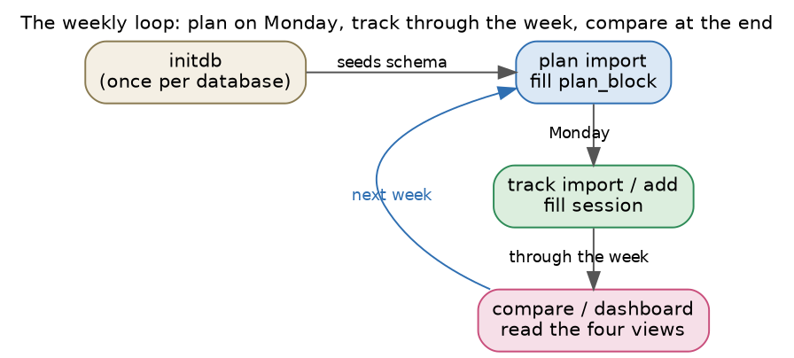

writing-habit compares the week you planned with the week you worked. The plan comes from your weekly table. The effort comes from your time tracker. One SQLite database holds both, and every report reads that database.

The weekly loop. Plan on Monday, track through the week, and compare at the end.
| When | Step | Tutorial | Tab |
|---|---|---|---|
| Before Monday | Write or adjust the weekly table | Edit the schedule | Schedule |
| Monday | Load the table into the database | Import the plan | Plan |
| Any day | Copy your logged time from mytime.db | Import writing effort | Track |
| Any day | See how far each project has come | Track project progress | Progress |
| Any day | Read planned against actual | Compare plan and effort | Compare |
| End of week | Write the HTML dashboard | Dashboard | Compare |
| Monthly | Look across weeks | Longer view | History |
Import the plan before you import the effort. The sync reads the week's legend to match each tracker row to a project letter, and the legend of a week reaches the database at plan import.
~/org/writing-habit.db, and press Run.
Running it again on an existing database is harmless.writing-habit initdb --db ~/org/writing-habit.db
To make the sync one word long in any terminal, add this line to ~/.zshrc.
source ~/6112MooersLabGitHubLabRepos/writing-habit/scripts/whsync.sh
The function reads two paths, which you can change with environment variables.
export WH_DB=~/org/writing-habit.db export WH_MYTIME=~/6003TimeTracking/cb/mytime.db
Each form shows the shell command it will run on its Command line, and the session log at the bottom keeps every command that ran. When you want to script a step, copy the line you watched succeed.
The folder examples/tutorial of the repository holds a weekly
table, week.org, and a small time tracker, mytime.db,
for the week of 5 October 2026. The screenshots in these tutorials come from
them. Use a scratch database such as /tmp/practice.db while you
practice, so your real one stays clean.